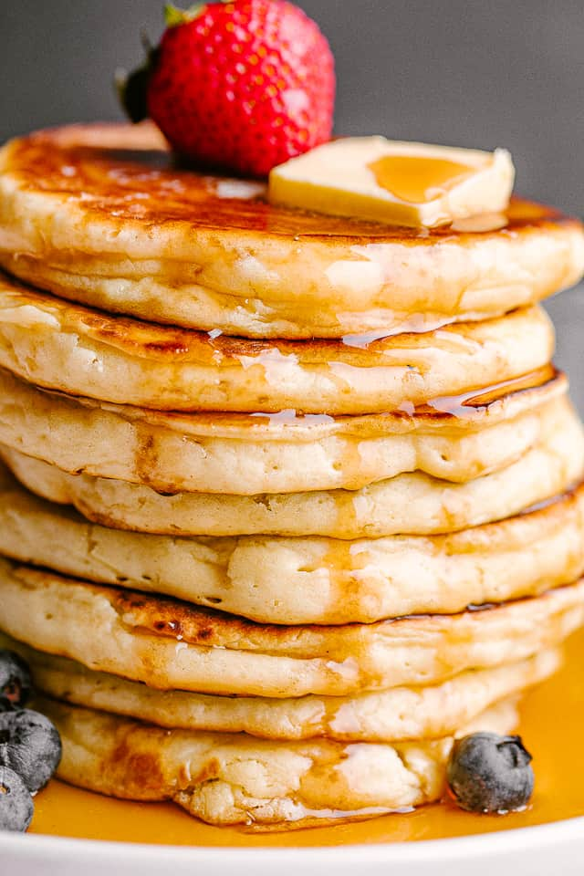

Fluffy Pancakes

You don't need a box to make great fluffy pancakes. Making them from scratch is just as easy and so much better.
Ingredients
- 3/4 cup buttermilk *
- 1 cup all purpose flour
- 2 tablespoons white sugar
- 1 teaspoon baking powder
- 1/2 teaspoon baking soda
- 1/2 teaspoon salt
- 1 egg>
- 2 tablespoons butter, melted
- cooking spray
- Maple syrup
* If you don't have buttermilk, add two tablespoons of white vinegar to 3/4 cup regular milk and let sit for 5 minutes
Directions:
- Place flour, sugar, baking powder, baking soda, and salt into a mixing bowl and whisk to combine
- Place milk, butter, and egg into a separate mixing bowl and whisk to combine
- Pour dry ingredients into the wet ingredients and whisk until all lumps are gone. Set aside.
- Heat a skillet over medium heat. Coat with cooking spray
- Pour desired amount of batter onto skillet. This recipe works best making 2-3 smaller pancakes rather than 1 large pancake.
- Cook pancakes until small bubbles start to form on the surface. Flip pancake and continue to cook until brown on the other side.
- Serve warm with maple syrup.